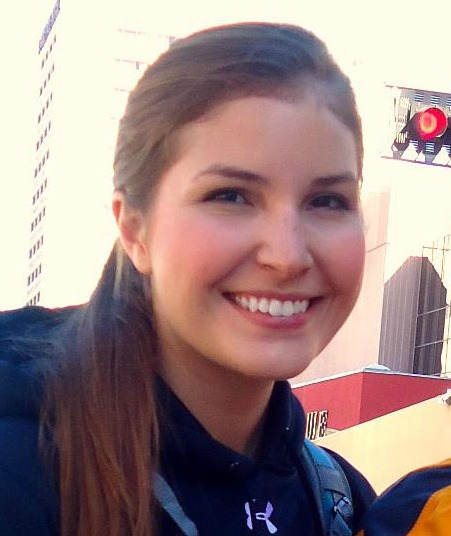

Staff and Students¶
Research Staff¶
 Paul Wilson, CNERG group leader
Paul Wilson, CNERG group leader |
 Douglass Henderson
Douglass Henderson |
 Andrew Davis, Andrew Davis
Andrew Davis, Andrew Davis |
 Julie Zachman
Julie Zachman |
Graduate Students¶
|
Kerry Dunn |
 Elliott Biondo
Elliott Biondo |
Robert Carlsen |
 Chelsea D’Angelo | |
|
Zach Welch |
 Patrick Shriwise
Patrick Shriwise |
Lucas Jacobson |
|
 Arrielle Opotowsky
Arrielle Opotowsky |

Undergraduate Students¶
 Kalin Kiesling
Kalin Kiesling |
Olzhas Rakhimov |
Employment Opportunties¶
Currently, there are no open position in the CNERG group.
Alumni¶
- Tae Wook Ahn, MS(2010), Entergy
- Geoff Bull, MS(2005), US Army
- Eric Edwards, PhD(2007), Knolls Atomic Power Laboratory
- Ryan Grady, MS(2008), Exelon
- Po Hu, PhD(2008), Shanghai Jiaotong Unviersity
- Katy Huff, PhD(2013), U. California - Berkeley
- Paul Humrickhouse, MS(2005), Idaho National Laboratory
- Brian Kiedrowski, PhD(2009), Los Alamos National Laboratory
- Matthew Klebenow, BSEP(2013), EPIC Systems
- Ahmad Ibrahim, PhD(2012), Oak Ridge National Laboratory
- Damien Moule, MS(2011)
- Phiphat Phruksarojanakun, PhD(2007), Thai Nuclear Regulatory Agency
- Kyle Oliver, MS(2009)
- Tracy Radel, MS(2007), Sandia National Laboratories
- Eric Relson, MS(2013)
- Jeremy Roberts, MS(2009), MIT
- Ben Schmitt, MS(2006), Global Nuclear Fuels
- Andy Scholbrock, BS(2009), U. Colorado
- Tim Setter, MS(2007), Tennesse Valley Authority
- Stuart Slattery, PhD(2013), Oak Ridge National Laboratory
- Rachel Slaybaugh, PhD(2012), Bettis Naval Reactor Laboratory
- Brandon Smith, PhD(2011), Los Alamos National Laboratory
- Patrick Snouffer, MS(2011), Sandia National Laboratories
- Chris Staum, MS(2006), Westinghouse